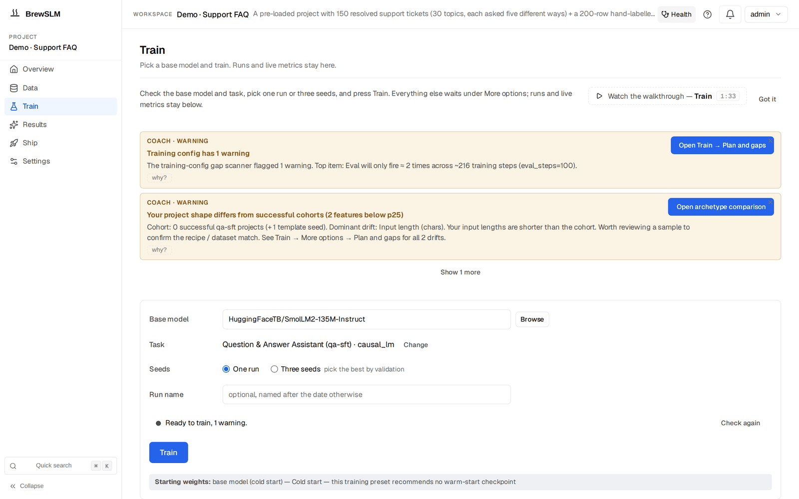

Train: jobs, the bell, and the delta-from-baseline curve
After this lesson you can launch training from the Train form as a background Job, monitor it via the notification bell and the run's live dashboard, read the delta-from-baseline view, and read why a failed run stopped.
This is the stage you know best — it's trainer.train() from lesson 2.5. The difference is everything around the loop: it runs as a tracked Job, streams progress to a bell, and plots its loss against your baseline.
Launch — one click or one call
In the workspace the launch is the Train page (/project/<id>/train): one form — base model, task, one run or three seeds, an optional run name, the readiness line — and the Train button, which opens a confirm dialog with the resolved config and an estimate before Launch. Everything else (epochs, LoRA, presets, cloud burst) waits under More options. Scripted, the same thing is two calls — create the experiment, then start it. The third call, the Autopilot's one-click-run, is API only: no screen in the app calls it.
# X-API-Key: your API key (sk-mock-admin-key is the local bootstrap admin)
$ curl -X POST localhost:8000/api/projects/1/training/experiments \
-H 'X-API-Key: sk-mock-admin-key' \
-H 'Content-Type: application/json' \
-d '{"name": "run-2026-10-18",
"config": {"base_model": "HuggingFaceTB/SmolLM2-135M-Instruct"}}' # → {"id": 42, ...}
$ curl -X POST localhost:8000/api/projects/1/training/experiments/42/start \
-H 'X-API-Key: sk-mock-admin-key'
# or let the Autopilot pick the plan from plain-language intent:
$ curl -X POST localhost:8000/api/projects/1/training/autopilot/one-click-run \
-H 'X-API-Key: sk-mock-admin-key' \
-H 'Content-Type: application/json' \
-d '{"intent": "classify support tickets by topic"}'
Training takes the prepared split + the resolved training config (including how often to save checkpoints, save_steps), and produces checkpoints, per-step loss / eval traces, and a final adapter weights blob — the same outputs your Trainer wrote to sft-out/, now first-class records on the experiment.
It runs as a background Job
Long-running work in BrewSLM is a Job persisted to a table. The top-bar notification bell polls /api/jobs/active every ~4 seconds and surfaces progress and outcome, so you don't sit watching a terminal. A watcher Job mirrors the experiment's progress into the bell, and the Job framework holds a strong reference to the running task so it can't be silently garbage-collected mid-run. The run itself appears in the runs list under the Train form, with its live metrics; when it completes, the watcher starts the lift check that Results → Verdict reports.
The delta-from-baseline curve
In Track 2 you read raw loss numbers scrolling past. On a run's dashboard BrewSLM plots the live loss curve, and for a warm-started run (one that continues from a checkpoint) it adds a delta from baseline series — the checkpoint's first recorded loss on your data is the zero line, and the run is drawn relative to it, so the marginal contribution of your rows is legible. That reframes the question from "is 0.58 good?" (which you can't judge in isolation) to "am I beating the starting point, and by how much?" — the comparison Track 1's evaluation lesson insisted on, now live during training. The base-model comparison proper comes after the run: the automatic lift check scores the base model and the fine-tune on the same test examples, and Results → Verdict (and the Overview's Latest run card) says whether the run beats its base and by how much.
From Track 2
Everything you learned about reading curves (lesson 2.6) applies here — falling-and-flattening is healthy, a rising eval trace is overfitting. The delta-from-baseline view just makes "better than where the checkpoint started" the explicit y-axis.
Three seeds, and what the lift is measured against
The Seeds choice on the Train form is One run or Three seeds. Three seeds trains the same config three times with seeds seed, seed+1, seed+2 (42, 43 and 44 with the default seed), one after another, as children of one seed group. The group's leader is a record, not a fourth run: it holds the group, and the results pages report the group through it.
Why bother? One run's lift says whether the fine-tune beat the base on these test rows; it cannot tell you whether another seed would have landed somewhere else. Seeds can disagree by more than the lift you are trying to measure, especially on a small test set. So the lift check scores every completed child against the same base result and reports the lift over seeds: a mean ± spread headline and a paired test across seeds whose verdict is better, worse, within noise (the seeds don't agree on the sign) or too few seeds. On an existing run's result card, Check across 3 seeds starts that group for you. When you ship a group, the seed is picked by a validation-split metric, never by the test split or the answer key.
The other half of an honest lift is the bar. BrewSLM decodes evals with plain, explicit settings (greedy, no repetition penalty), but some instruct base models score worse that way than with their maker's own decoding config, which would inflate the lift. So when a base model's own config sets a repetition penalty, an n-gram block or beams, the lift check scores the base twice, plain and with the model's own decoding, and the higher score is the bar: the strongest-baseline rule. The fine-tune is always decoded plainly. The Results card says which decoding set the bar. (Sources: backend/app/services/post_training_eval_service.py, paired_comparison_stats.py, agent-notes/evaluation.md.)
When a run fails
A real run that doesn't complete is marked failed in the runs list. The run's live console shows the training log as it streamed, and the full log is kept with the run's output (its path is recorded on the experiment). On public BrewSLM main that is the whole record: the run does not save a failure reason or the step it stopped at, so the log is where you diagnose it — an out-of-memory kill, for example, shows up as the process dying, with no separate OOM code.
The run's Checkpoints panel lists the checkpoints it saved (every save_steps), with Promote to make one the run's best and Resume from…, which creates a new, not-yet-started run with the same config and a pointer to that checkpoint. On public main only the simulate runtime actually continues from that step; the real trainer does not read the pointer, so for a real run the new run trains from the start.
Fix coming
Changes that save a failure reason with the step and last checkpoint, show it on the run, and let a real run continue from its checkpoint are merged but not yet released.
On the RunEvent timeline (Ship → Monitor) a real run emits one event, "Training started" (info). If handing the run to the worker throws, you get training_dispatch_error. A real run that fails later emits nothing to the timeline. The training / info "Training completed" event (with final_train_loss) and training_runtime_error come from the simulate runtime only. Other training codes such as training_oom and training_cancelled are declared but not emitted today: cancelling a run from its row stops the training process and changes its status, with no event. With a trained adapter and its traces recorded, the next stage asks the real question: is it good enough to ship? That's evaluation — Results.
Key idea
Stage 08 is your training loop, watched: one Train form, a background Job with bell progress, a live dashboard per run (with a delta-from-baseline curve for warm starts), an automatic base-vs-fine-tune lift check on completion (over seeds when you train three, against the strongest baseline), and, when a run fails, its status, its log and its checkpoints.
Key terms
- training Job
- The background, persisted task that runs stage 08, launched from the Train form; tracked so it can't be GC'd mid-run.
- NotificationBell
- Top-bar surface polling /api/jobs/active (~every 4s) for progress and outcome.
- delta-from-baseline curve
- On a warm-started run's dashboard: the live loss plotted relative to the checkpoint's first recorded loss on your data as the zero line.
- seed group
- The same config trained with several seeds (Three seeds = 3); a leader record holds the children, and the lift is reported over seeds.
- strongest-baseline rule
- When a base model's own decoding config differs from plain decoding, the lift check scores the base both ways and uses the higher score as the bar.
- training RunEvents
- Real runs: "Training started" (info), and training_dispatch_error if the hand-off to the worker throws; a real run that fails later emits nothing. The completion event and training_runtime_error are simulate-only; training_oom / training_cancelled are declared, not emitted.
Check yourself
Answers are saved to this browser.